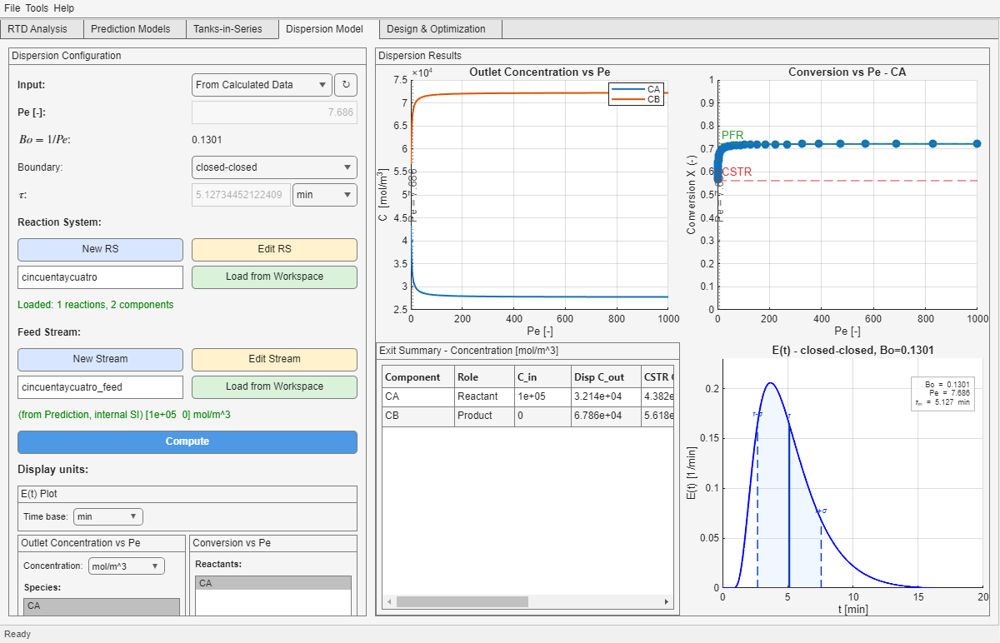

This tab interprets the reactor through axial dispersion, usually via Pe or the equivalent internal dispersion number Bo = 1/Pe. It can use different boundary conditions and therefore must be read more carefully than Tabs 2 and 3.
| Boundary mode | Current role in the app |
|---|---|
| Closed-closed | General reactive route available in the current implementation. |
| Open-open | Allowed only when the kinetics satisfy the current exact-support condition checked by the app. |

E(t) view of the equivalent dispersion RTD.| Control or concept | How to interpret it |
|---|---|
| Manual / From Calculated Data | Determines whether the dispersion route is driven by imported RTD information or by local parameter entry. |
Pe | The visible user-facing dispersion measure; large values approach plug-flow-like behavior. |
Bo = 1/Pe | The reciprocal internal representation used in the implementation. |
| Boundary selector | Changes not only the hydrodynamic interpretation but also which reactive route is admissible. |
| Chemistry loading | Defines whether the tab can compute reactive outlet and conversion sweeps at all. |
Pe means stronger axial spreading and therefore behavior closer to backmixed limits; high Pe means sharper age separation and therefore behavior closer to plug flow.
For a direct comparison between Dispersion, Tanks-in-Series, and the full-RTD route, see the Model Selection guide.
| Panel | What it tells you |
|---|---|
| Outlet Concentration vs Pe | How each selected species approaches stronger backmixing or more plug-flow-like behavior as dispersion changes. |
| Conversion vs Pe | Where the current dispersion state lies relative to the ideal CSTR and ideal PFR references. |
| E(t) - Dispersion | The RTD shape implied by the current dispersion parameter and boundary condition. |
This is the general reactive route currently available in the implementation and is the safer default when you want the dispersion interpretation without extra kinetic restrictions.
Use this only when the boundary assumption is truly relevant and the current kinetics satisfy the exact support condition enforced by the app.
If you need a refresher on the RTD side of the interpretation before judging the reactive differences, use the RTD Interpretation appendix.
Pe input with the internal dispersion number Bo = 1/Pe.